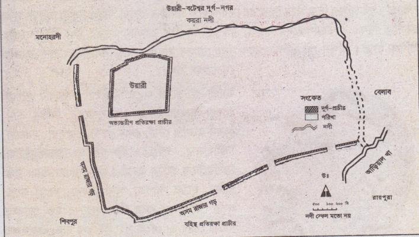

মাটির নিচে যে শহর
বাংলাদেশের মধ্যে বেশ কয়েকটা প্রাচীন প্রত্নতাত্ত্বিক নিদর্শন আছে। সে সব স্থানের নাম তোমরা হয়তো জান, যেমন– ময়নামতি, মহাস্থানগড় ও পাহাড়পুর। এগুলো কোনোটি হয়তো তোমরা দেখেও থাকবে। সেগুলো সবই মাটির উপরে, টিবির আকারে, তাই সহজে দূর থেকেই দেখা যায়। কিন্তু এদেশে মাটির নিচে রয়েছে এক প্রাচীন নগর-সভ্যতা।
কুমিল্লার লালমাই আর বরেন্দ্র অঞ্চলের পাহাড়পুর এবং মহাস্থানগড়ের মতো মধুপুর গড়ের অধিকাংশ ভূমির গঠন একই রকম। এ অঞ্চল মধুপুর গড় নামে পরিচিত। মৃত্তিকা-বিজ্ঞানীগণ বলেন, এই অঞ্চলের মাটির হাজার হাজার বছরের পুরানো। আজ থেকে বহু বহু বছর আগে আমাদের এই দেশের ভূপৃষ্ঠ ঠিক এই রকম ছিল না। খ্রিষ্টপূর্ব সাত থেকে ছয় শতকে বর্তমানের গঙ্গা নদীর তীরে সুসভ্য জনমানুষের বসতি ছিল। এখানে ছিল সুন্দর নগরী। এখনকার নরসিংদী দিয়ে বয়ে গেছে পুরাতন ব্রহ্মপুত্র নদ। ১৭৭০ সাল পর্যন্ত ব্রহ্মপুত্র নদ ময়মনসিংহ পেরিয়ে নরসিংদী জেলার বেলাবো উপজেলার দক্ষিণ দিক থেকে প্রাচীন সোনারগাঁ নগরের পাশ দিয়ে প্রবাহিত ছিল।
৭৭এরপর সম্ভবত বড় ভূমিকম্প, বন্যা-প্লাবন বা নদীভাঙন হয়েছিল কোনো এক সময়ে। ফলে এসব অঞ্চলে ভূপ্রকৃতির বড় রকমের ওলটপালট হয়। ১৮৯৭ সালে প্রচণ্ড এক ভূমিকম্প হয় আমাদের দেশে। ফলে মাঠ-ঘাট, নদী-নালা আর জনবসতি সবই প্রাকৃতিক কারণে বদলে যায়। এখনো তোমরা দেখে থাকো নদীর পাড়ের জমি, ঘরবাড়ি, গ্রাম আর রাস্তা-ঘাট ভাঙছে। আবার বিশাল নদীর অন্য দিকে বিস্তীর্ণ চর পড়ছে। শত শত বছর আগে থেকেই এইভাবে চলে আসতে থাকে ভাঙা-গড়া। মাটিচাপা পড়ে যায় এক একটি নগর-জনপদ। মাটি খুঁড়ে এমনি এক সুপ্রাচীন নগর-জনপদের দেখা পাওয়া গেছে বাংলাদেশে। সেই স্থানের নাম নরসিংদী জেলার উয়ারী-বটেশ্বর। উয়ারী-বটেশ্বর ঢাকা থেকে ৭০ কিলোমিটার উত্তর-পূর্বে নরসিংদীর বেলাবো ও শিবপুর উপজেলায় অবস্থিত। এটি একটি প্রত্নতাত্ত্বিক স্থান।

আসলে উয়ারী এবং বটেশ্বর পাশাপাশি দুটি গ্রাম। এই দুই গ্রামে প্রায়ই বিভিন্ন প্রত্নতাত্ত্বিক উপাদান পাওয়া যেত। ১৯৩৩ সালে উয়ারী গ্রামে শ্রমিকরা মাটি খনন করার সময় একটা পাত্রে জমানো কিছু মুদ্রা পায়। স্থানীয় স্কুল শিক্ষক মোহাম্মদ হানিফ পাঠান সেখান থেকে ২০-৩০টি মুদ্রা সংগ্রহ করেন। এগুলো ছিল বঙ্গদেশের এবং ভারতের প্রাচীনতম রৌপ্যমুদ্রা। সেটাই ছিল উয়ারী-বটেশ্বরের প্রত্নতাত্ত্বিক নিদর্শন সংগ্রহের প্রথম চেষ্টা। তিনি তাঁর ছেলে হাবিবুল্লাহ পাঠানকে এ সম্পর্কে সচেতন করে তোলেন। ১৯৫৫ সালে বটেশ্বর গ্রামের শ্রমিকরা দুটি লৌহপিণ্ড ফেলে যান। ত্রিকোণাকার ও একমুখ চোখা ভারী লোহার পিণ্ডগুলো হাবিবুল্লাহ পাঠান বাবাকে নিয়ে দেখান।
৭৮তিনি অভিভূত। ১৯৫৬ সালে উয়ারী গ্রামে মাটি খননকালে ছাপাঙ্কিত রৌপ্য মুদ্রার একটি ভাণ্ডার পান তিনি। তাতে চার হাজারের মতো মুদ্রা ছিল। ১৯৭৪-৭৫ সালের পর থেকে হাবিবুল্লাহ উয়ারি-বটেশ্বরের প্রচুর প্রাচীন নিদর্শন সংগ্রহ করেন। পরে তিনি সেগুলো জাদুঘরে জমা দেন। অনেক পরে ২০০০ সালে এখানে শুরু হয় খনন কাজ। নেতৃত্ব দেন জাহাঙ্গীরনগর বিশ্ববিদ্যালয়ের প্রত্নতত্ত্ব বিভাগের অধ্যাপক সুফি মোস্তাফিজুর রহমান। খনন করে পাওয়া যায় আড়াই হাজার বছরের প্রাচীন দুর্গ-নগর। আরও পাওয়া যায় ইটের স্থাপত্য, বন্দর, রাস্তা, গলি, পোড়ামাটির ফলক, মূল্যবান পাথর, পাথরের বাটখারা, কাঁচের পুঁতি, মুদ্রাভাণ্ডার। মুদ্রাগুলো ভারত উপমহাদেশের মধ্যে প্রাচীনতম। বিশেষজ্ঞদের ধারণা মাটির নিচের থাকা এই স্থানটি প্রায় আড়াই হাজার বছরের পুরনো।
সে সময় শীতলক্ষ্যা নদীর পাড়ের বিস্তীর্ণ অঞ্চল জুড়ে ছিল সুসভ্য মানুষজনের বসবাস। ছিল নগর সভ্যতা। পূর্ব-দক্ষিণ দিক দিয়ে ভৈরবের মেঘনা হয়ে এখাকার ব্যবসা-বাণিজ্য সুদূর জনপদ পর্যন্ত প্রসারিত ছিল। ঐতিহাসিকদের ধারণা, ব্রহ্মপুত্র নদ হয়ে বঙ্গোপসাগরের মধ্য দিয়ে ব্যবসা-বাণিজ্য চলত। দক্ষিণ-পূর্ব এশিয়া থেকে সুদূর রোমান সাম্রাজ্য পর্যন্ত ‘উয়ারী-বটেশ্বর’ রাজ্যের যোগাযোগ ছিল।
উয়ারী-বটেশ্বরের আশেপাশে প্রায় পঞ্চাশটি পুরানো জায়গা পাওয়া গেছে। আশেপাশের বিভিন্ন গ্রাম, যেমন-রাঙ্গার টেক, সোনারুতলা, কেন্দুয়া, মরজাল, টঙ্গীরাজার বাড়ি, মন্দিরভিটা, জানখাঁরটেক, টঙ্গীরটেকে প্রাচীন বসতির চিহ্ন পাওয়া যায়। দুর্গ-প্রাচীর, ইটের স্থাপত্য, মু্দ্রা, গহনা, ধাতব বস্তু, অস্ত্র থেকে শুরু করে জীবনধারণের যত প্রত্নবস্তু পাওয়া গেছে তা থেকে সহজেই বলা যায়, এখানকার মানুষ যথেষ্ট সভ্য ছিল। এই স্থানের বসতি এলাকাটি সম্ভবত রাজ্যের রাজধানী ছিল। অধ্যাপক সুফি মোস্তাফিজুর রহমানের ধারণা, এই প্রত্নতত্ত্ব স্থাপত্য অত্যন্ত সমৃদ্ধ আর যথাযথ পরিকল্পনায় গড়া। এই সভ্যতা প্রাচীনকালে ‘সোনাগড়া’ নামে বিশ্বজুড়ে পরিচিত ছিল। উয়ারী-বটেশ্বর থেকে ৮ কিলোমিটার দূরে অবস্থিত শিবপুর উপজেলা। এখানকার মন্দিরভিটায় এক বৌদ্ধ পদ্মমন্দিরও আবিষ্কৃত হয়েছে। জানখাঁরটেকে একটি বৌদ্ধবিহারের সন্ধান পাওয়া গেছে। ক্রমে ক্রমে আরও অনেক আশ্চর্য সব নিদর্শন পাওয়া যেতে পারে এই এলাকা থেকে।
৭৯অনুশীলনী
১. শব্দগুলো পাঠ থেকে খুঁজে বের করি। অর্থ বলি।
|
প্রত্নতাত্ত্বিক |
উপত্যকা |
জনপদ |
প্রাচীনতম |
|
অভিভূত |
নিদর্শন |
খ্রিষ্টপূর্ব |
ঐতিহাসিক |
২. ঘরের ভিতরের শব্দগুলো খালি জায়গায় বসিয়ে বাক্য তৈরি করি।
|
ঐতিহাসিক |
উপত্যকা |
অভিভূত |
নিদর্শন |
প্রাচীনতম |
ক. পাহাড়পুর আমাদের দেশে অতি [………………………………………] একটি বিহার।
খ. ক্রমে ক্রমে অনেক আশ্চর্য […………………………] পাওয়া যাচ্ছে উয়ারী-বটেশ্বরে।
গ. উয়ারী-বটেশ্বর বাংলাদেশের [………………………………………] নিদর্শন।
ঘ. পাহাড় ও পর্বতের মাঝে সমতল ভূমিকে বলে [………………………………….]।
ঙ. আমি জাদুঘর দেখে [………………………..] হয়ে গেলাম।
৩. প্রশ্নগুলোর উত্তর মুখে বলি ও লিখি।
ক. প্রত্নতাত্ত্বিক নিদর্শন বলতে কী বোঝ? বাংলাদেশের প্রত্নতাত্ত্বিক নিদর্শনগুলি সম্পর্কে যা জান লেখ।
খ. উয়ারী-বটেশ্বরের এর প্রত্নতাত্ত্বিক নিদর্শন কীভাবে মানুষের নজরে এলো?
গ. উয়ারী-বটেশ্বরের এলাকটি বাংলাদেশের কোন অঞ্চলে অবস্থিত? এই এলাকাটির প্রত্নতাত্বিক অঞ্চলে পরিণত হওয়ার পিছনে কী কারণ তা লেখ।
ঘ. ব্রহ্মপুত্র নদ আগে কোথা দিয়ে প্রবাহিত হতো আর এখন কোথায়?
ঙ. কোন কোন নিদর্শন থেকে উয়ারী-বটেশ্বরের সময়কাল জানা যায়?
চ. উয়ারী- বটেশ্বর এলাকাটি সম্পর্কে ঐতিহাসিকগণ যা ধারণা করেছেন তা বর্ণনা কর।
৮০৪. বিশেষভাবে লক্ষ্য করি।
ছাপাঙ্কিত-ছাপ হলো দাগ বা চিহ্ন দেওয়া। কোনো কিছুর উপর ছাপ দিয়ে অঙ্কন করা। বাংলাদেশের মুদ্রার উপর শাপলা ফুল ছাপাঙ্কিত আছে।
এখানে দুটি শব্দ, ছাপা + অঙ্কিত মিলে হয়েছে ছাপাঙ্কিত। এইরকম দুই শব্দের মিলন হলে তাকে বলে সন্ধি। যেমন, নীল + আকাশ = নীলাকাশ।
৫. ঠিক উত্তরটিতে টিক () চিহ্ন দিই।
ক. উয়ারী-বটেশ্বরের প্রচুর প্রাচীন নিদর্শন সংগ্রহ করে জাদুঘরে কে জমা দেন?
১. হাসিবুল্লাহ পাঠান
২. হাফিজুল্লাহ পাঠান
৩. হাবিবুল্লাহ পাঠান
৪. শরিফুল্লাহ পাঠান
খ. একটি বৌদ্ধবিহারের সন্ধান পাওয়া গেছে-
১. ভাষানটেকে
২. জানখাঁরটেকে
৩. টেকেরহাটে
৪. টঙ্গীরটেকে
গ. কোন নদীপাড়ের বিস্তীর্ণ অঞ্চল জুড়ে ছিল সুসভ্য মানুষজনের বসবাস?
১. বুড়িগঙ্গা
২. ব্রহ্মপতু
৩. শীতলক্ষ্যা
৪. মেঘনা
ঘ. ব্রহ্মপুত্র নদ বয়ে গিয়েছে কোন অঞ্চলের পাশ দিয়ে?
১. মধুপুর
২. ময়নামতি
৩. পাহাড়পুর
৪. নরসিংদী
ঙ. এই সভ্যতা প্রাচীনকালে কী নামে বিশ্বজুড়ে পরিচিত ছিল?
১. রুপাগড়া
২. মনগড়া
৩. সোনাগড়া
৪. সোনাঝুরি
৬. কর্ম- অনুশীলন।
বাংলদেশের একটি ঐতিহাসিক স্থান সম্পর্কে রচনা লিখি।
৮১